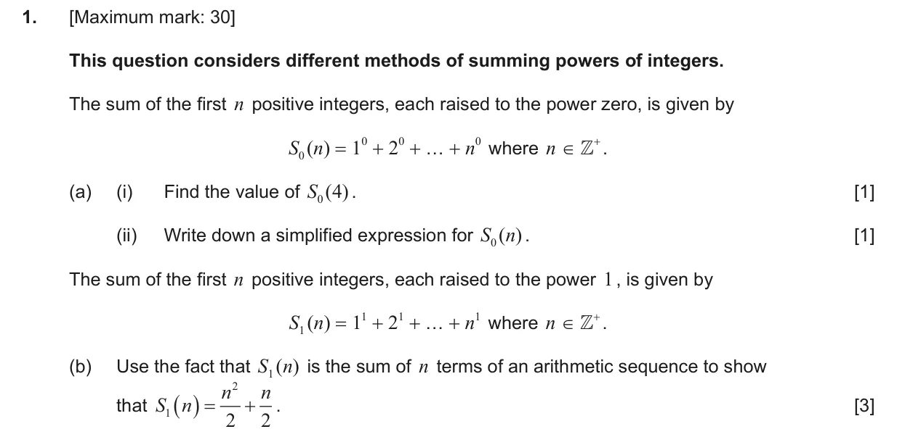
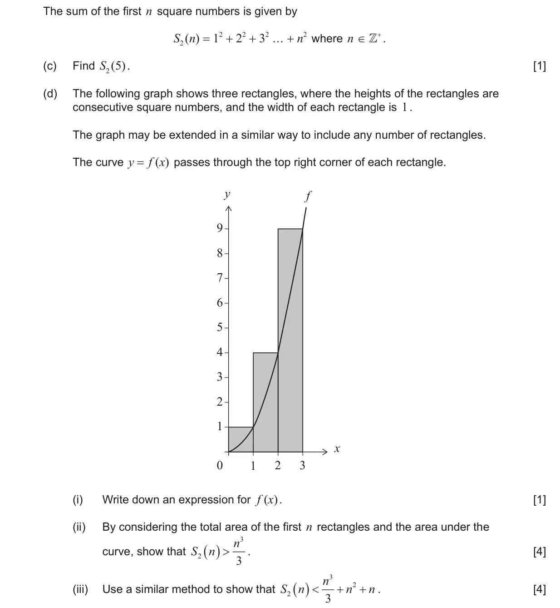
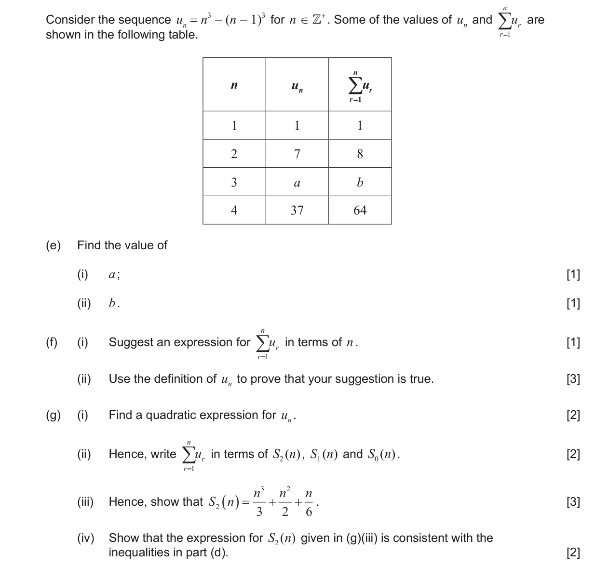
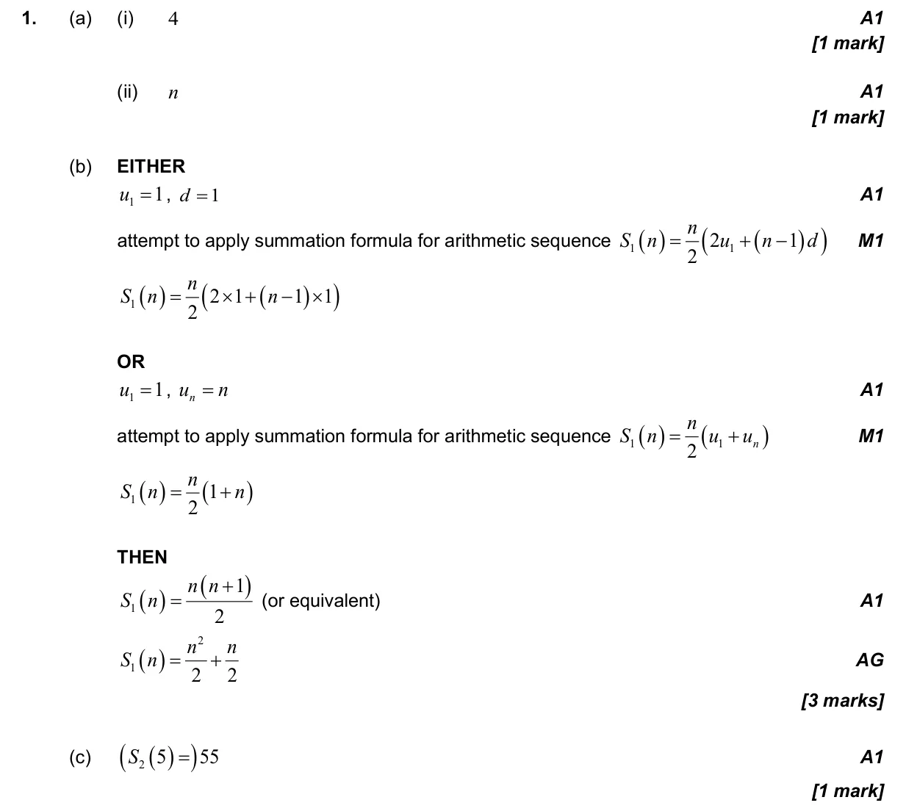
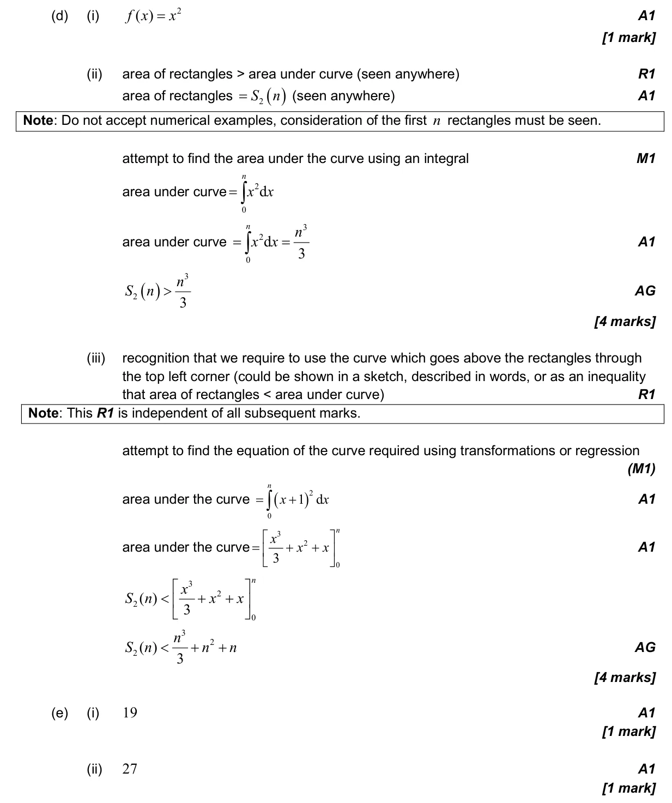
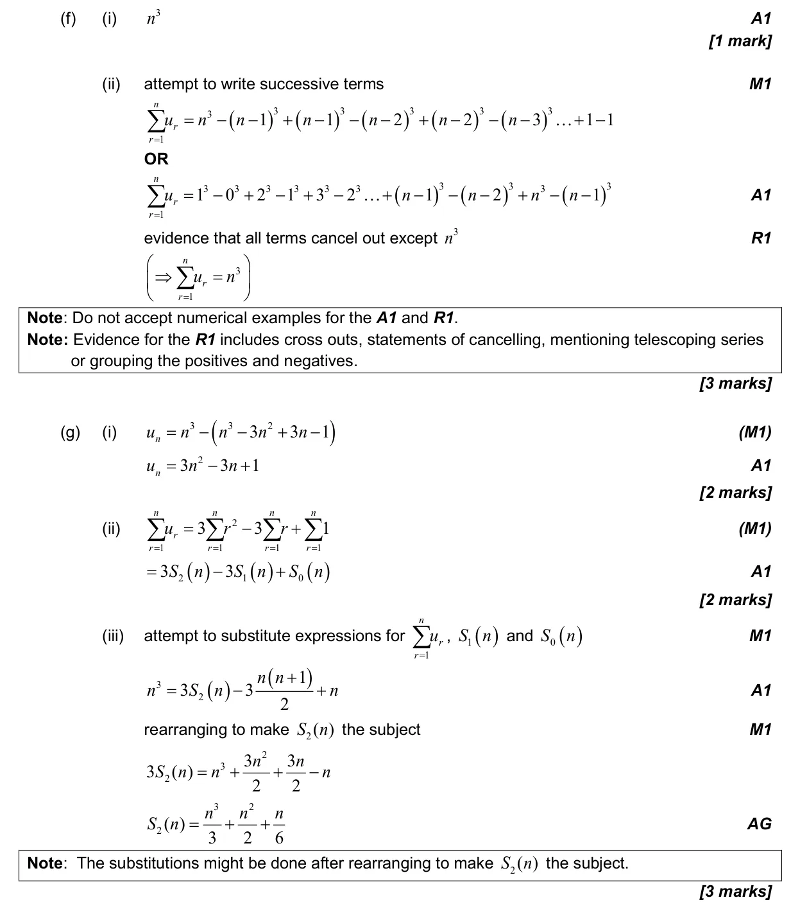
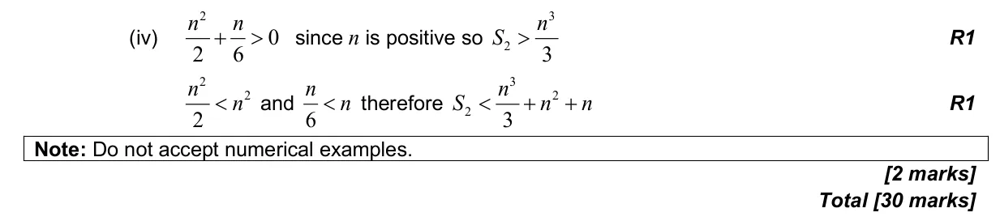

1.6 Simple deductive proof1.2 Arithmetic sequences and series5.5 Integration introduction, areas between curve and x-axis1.5 Laws of exponents with integer exponents and introduction to logarithms1.9 Binomial theorem2.11 Transformations of graphs2.6 Quadratic function2.2 Functions, notation, domain, range and inverse as reflection
Question



Markscheme



